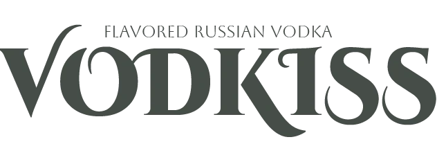
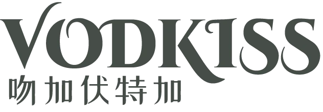
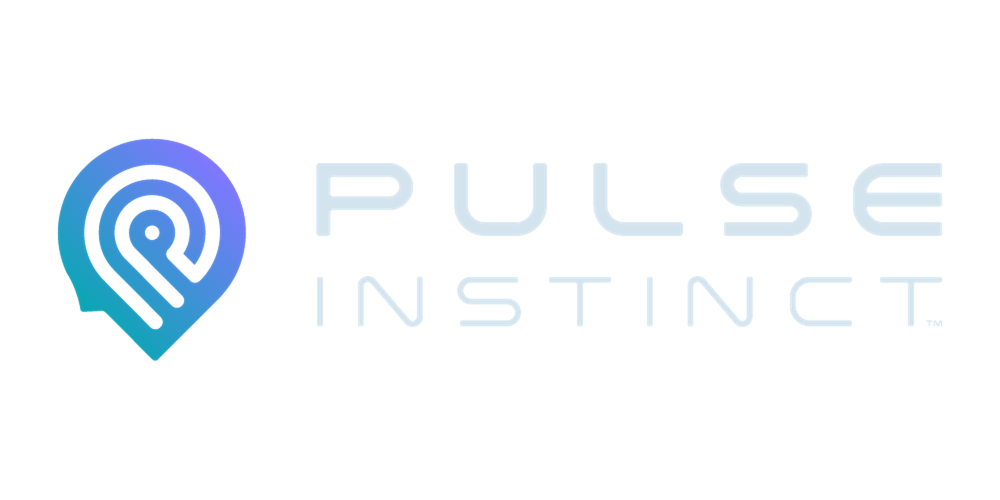
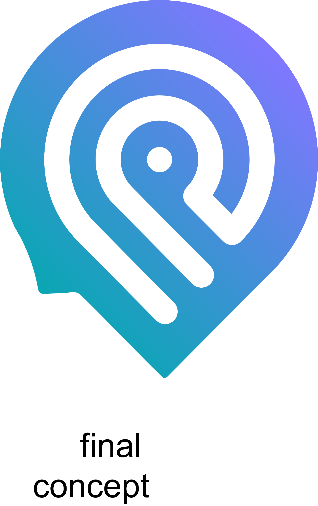
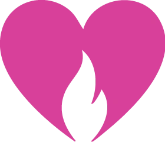

Pulse Branding / Project identity library
Identity, in full view.
Each project has its own marks, palette, typography and visual language. These portfolio brand references make the system visible, alongside the work it informs.
Linked official and local brand centers are distinguished from recovered guides and source-site references. An unverified brand-center location is a gap to resolve, not permission to invent a brand.
A point of view, made visible.
The agency identity frames the collection. Midnight blue, a cool light ground and a measured contrast between Montserrat and italic Noto Serif Display follow the current website.
See the branding in the case study ↗01 / The mark

02 / Colour system
#0A1931Current website background#E1EEF0Current website text / light ground#2163AFCurrent website blue#291C53Current website violet03 / Typography
Montserrat
A point of view.
Current website heading / Medium 500
Noto Serif Display
A human perspective.
Current homepage emphasis / Italic 300
Montserrat
Strategy, identity and experience.
Current website body / Regular 400
04 / The system in use
The collection’s introduction and agency reference use this current website identity. Each client’s case remains in its own visual language.
Open the existing Pulse Branding center ↗Existing Notion Brand Center (2023), unchanged 2025 logo master and the current www.pulse-branding.com homepage inspected 7 September 2026. Colours below are verified website values.
Source status & version distinctions
The public /brand-center page returned Page Not Found. The older center includes Gotu and Tenor Sans, whereas the live homepage uses Montserrat with Noto Serif Display italic. An AI-maintained 2026 bible contains conflicting HEX/RGB pairs; it is not treated as an approved replacement. These versions are kept separate.
Precision, with a human voice.
The identity is more than a black bottle. A custom wordmark, a warm near-black palette, carefully weighted sans-serif type and a contrasting serif form a complete visual language.
See the branding in the case study ↗01 / The marks


02 / Colour system
#0A0A0APrimary background#1A1A1ASurface / layer#C8B89AAccent / rules / emphasis#111111Secondary background#242424Mid surface#E0D0B0Light accent#F5F5F0Primary textColour specimens are reference chips, not suggested page fills. Sand Gold is reserved for accents, rules and typographic emphasis. Crimson #C1121F belongs to physical applications only; it is not a digital accent.
03 / Typography
Poppins
Quiet precision.
Display / Medium 500 / −0.03em
Noto Serif Display
A human touch.
Emphasis / Italic 400 / natural tracking
Poppins
Considered in every detail.
Subtitle / Light 300 / 1.65 line height
Poppins
NEOLAB.CARE
Brand-book label / Medium 500 / 0.28em
04 / The system in use
Packaging, the product image system and the original motion study follow below. Historical artwork remains labelled as development, rather than silently treated as current production approval.
Open the NeoLabCare brand center ↗Logo downloads, colour system and typography sections of the live brand book, checked 7 September 2026. This replaces the earlier incomplete brand-source search.
Source status & version distinctions
The book's logo section and later download section differ on minimum size and primary variant. This display follows the download section's gold-on-dark usage and the stricter 120px minimum. It does not copy the book's inconsistent product or efficacy claims. Typography specimens follow the identity table; the website's separate CSS table specifies 600-weight interface labels and 400-weight body text.
An identity with room to breathe.
A precise wordmark, widely spaced typography and an ocean-blue hierarchy give the robotics brand a recognisable voice before a product is introduced.
See the branding in the case study ↗01 / The mark

02 / Colour system
#060D18Base#0C1828Surface#142035Layer#1E3550Structure#4AA8C8Accent#A8DCEFHighlight#F0F4F8Light application03 / Typography
Poppins
ROBOTIST
Display / Medium 500 / uppercase / 0.20em
Poppins
HUMAN BY DESIGN
Section / Light 300 / uppercase / 0.06em
Poppins
A clearer introduction to robotics.
Body / Light 300 / 0.01em
04 / The system in use
The character system, product presentation and digital applications show how this identity behaves beyond the logo.
Brand-guide source record ↗Recovered robotist-brand-system/robotist-brand-guide.html. The live site's system-font implementation is recorded separately; it does not replace the guide's Poppins typography.
Source status & version distinctions
A public brand-center URL is not yet verified. This is a portfolio reference assembled from the recovered guide, not a newly approved client brand book.
An expressive family, not a single label.
The original wordmarks, five-colour palette and three type families connect identity, botanical illustration and packaging.
See the branding in the case study ↗01 / The marks
{kind=link}

{kind=link}

02 / Colour system
#464D48Identity palette#C9B875Identity palette#5C6E3FIdentity palette#D8817AIdentity palette#708D8DIdentity palette03 / Typography
Cinzel Decorative
VODKISS
Decorative identity type / Black 900
Aboreto
A LITTLE OCCASION
Secondary identity family / Regular 400
Tw Cen MT
Flavour, with a sense of occasion.
Supporting type / Regular 400
04 / The system in use
The flavour labels, botanical worlds, gift packaging and flat production artwork are the identity in application.
Identity-deck source record ↗Pulse Branding – Vodkiss Brand Identity and Packaging Design.pptx, identity palette and typography on slides 19–20.
Source status & version distinctions
No standalone public brand-center URL is verified. Type-family assignments in this portfolio are presentation adaptations, not a claimed approved website type scale.
A shared language for science.
The combined Westlake / WeKwikGene lockup, scientific colour hierarchy and Alibaba Sans are presented as one system, alongside the original DNA visuals.
See the branding in the case study ↗01 / The mark
02 / Colour system
#144168Primary#59A7BE2024 case palette#EE8D002024 case palette#F5F6F8Case-study ground03 / Typography
Alibaba Sans
Science, shared.
Original identity family / Regular 400
04 / The system in use
The original case contains logo, colour, type, DNA motion and platform applications. Its established composition and motion remain intact.
Historical and live source comparison ↗WeKwikGene Case Study 2024.pptx and the recovered original logo package. The original case-study palette is retained.
Source status & version distinctions
A public brand center is not yet verified. Live website aqua and orange differ slightly from the 2024 deck. They are documented as implementation differences, not silently normalised into the historical case.
Learning has a visual personality.
A warm sunset palette, rounded display lettering and the original Gramlin build recognition across the landing page and learning worlds.
See the branding in the case study ↗01 / The mark
02 / Colour system
#FF8C42Primary brand colour#FFF5EEGround#2D1B10Text#8FD14FSupporting colour03 / Typography
Baloo 2
A little play.
Display / ExtraBold 800
DM Sans
One question. A world to explore.
Landing-page body / Regular 400
04 / The system in use
The original Gramlin poses, world covers, landing page and mobile learning screens demonstrate the wider identity.
View the source landing page ↗Original landing-page logo, served fonts and colours. This reference records the current source identity; it is not a substitute for a separately approved brand book.
Source status & version distinctions
The dedicated brand-center location remains unverified. App typography variations stay visible in the unaltered source screenshots. Native-app release is not implied.
A mark. A script. A field of knowledge.
The cinnabar mark, warm paper, brown ink and contrasting Latin and Chinese typefaces establish the catalogue's identity.
See the branding in the case study ↗01 / The mark

02 / Colour system
#F4EEE1Identity ground#F6F1E8Digital surface#3B1907Text#B8452EMark / accent#8B7355Supporting colour03 / Typography
Libre Baskerville
Knowledge, made discoverable.
Latin display / Regular 400
Work Sans
A catalogue of connections.
Latin interface / Regular 400
Noto Serif SC
中国古代科学
Chinese serif / source font
Long Cang
山医命相卜
Calligraphic display / Regular 400
04 / The system in use
The catalogue, field navigation and desktop and mobile pages show this visual language in use.
View the correct source website ↗The user-confirmed domain and its observed ancient-science-of-china-n9pv.onrender.com deployment. Original asoc-mark-cinnabar.svg, served colours and fonts.
Source status & version distinctions
The dedicated brand center and current source checkout remain unverified. The rejected Astro project and its deployments are not sources for this reference.
A recognisable point of view.
The original mark, ink landscapes, portrait studies, warm grey paper and pink create a personal identity around the reading experience.
See the branding in the case study ↗01 / The mark
02 / Colour system
#FFC1CBBrand accent#CDC6C3Paper ground#181818Primary text03 / Typography
Philosopher
A little more of you.
Display / Regular 400
Mulish
A conversation, not a verdict.
Body and interface / Regular 400
04 / The system in use
The portrait, ink landscape, landing page and mobile reading belong to the same brand story.
View the source website ↗Original supplied artwork and the current website's Philosopher / Mulish type system and core palette. The five-element colours in the case are semantic reading colours, not replacements for the brand palette.
Source status & version distinctions
A separate brand-center URL is not yet verified. Only the public fictional sample is used for reading screenshots; no personal reading is included.
The product's own identity.
The current application combines a dark workspace, a blue-to-violet accent system and Geist typography. This product identity is distinct from Pulse Branding and from Pulse Instinct.
See the branding in the case study ↗01 / The mark
{kind=link}
02 / Colour system
oklch(9.5% .005 280)Backgroundoklch(96% .004 280)Primary text#5E6AD2Accent#7C3AEDAccent03 / Typography
Geist
Strategy, put to work.
Display / Medium 500
Geist
A source. A decision. A next step.
Body and interface / Regular 400
04 / The system in use
The current entry screens and explicitly dated workflow captures show digital applications; neither establishes an approved brand-book release or a working publishing integration.
View product-source evidence ↗Current Home.tsx and index.css. The displayed Sparkles symbol preserves the existing interface component geometry; it is not presented as a commissioned custom logo master.
Source status & version distinctions
A dedicated Growth Engine brand center and approved custom logo package remain unverified. The product's Brand Kit feature manages other brands; it is not evidence of Growth Engine's own brand guidelines.
A response, with a recognisable form.
The original silhouette brings a mind, the initials P and I, and a bullseye into one mark. Its gradient, custom lettering and Poppins typography carry through the preference-testing experience.
See the branding in the case study ↗01 / The marks
{kind=link}


{kind=link}

02 / Colour system
#E2E5EC2022 palette / case ground#D5DDEA2022 palette / surface#0225562022 palette / text and dark application#0973C32022 core palette#8077FF2022 core paletteThe Design Guide specifies supplied gradients only, with 45-degree direction for buttons and horizontal direction allowed on scrolling pages. Original gradient artwork is preserved in the images and films; the five-colour plate is not used to invent a replacement gradient.
03 / Typography
Poppins
Which do you prefer?
Supporting identity family / Medium 500 presentation specimen
Poppins
Aa Bb Cc · 0123456789
Supporting identity family / Regular 400 presentation specimen
04 / The system in use
Original welcome and preference-testing mobile designs, onboarding artwork and recovered logo and promotional films show the 2022 identity in application.
Open the original Pulse Instinct Design Guide ↗Pulse Instinct 2022.pptx, especially slides 3–7, and the September 2022 Notion Design Guide. Original embedded PNG artwork is extracted without alteration. The five core colours below come from slide 7.
Source status & version distinctions
The Notion Brand and Logo library is at https://app.notion.com/p/21674b62a5e04443835010dfd67e5458. The current app login retains Poppins, navy and violet but includes a teal-to-violet button gradient; it is a separate current implementation. The 2022 mobile designs are archival mockups, not current app captures. Pulse Instinct / 心动挑挑 is separate from Pulse Growth Engine.
Warmth, held in a system.
The supplied heart/flame and custom wordmark lead a day-and-night identity. They are original design exports, never approximated with typed text.
See the branding in the case study ↗01 / The marks


{kind=link}

02 / Colour system
#FAEDF5Day#392335Day text#FF9BD3Day accent#251323Night#D8419ANight accent03 / Typography
Trebuchet MS
A place for presence.
Brand-center display / system font
Verdana
The same welcome, closer to hand.
Brand-center body / system font
04 / The system in use
The day/night boards, app icon, companion welcome and garden prototype carry the identity into its intended contexts.
Open the local Edenne brand center ↗Edenne logo 20260907.ai and the local brand-center exports. Day and night variants are recorded as the current prototype system, not a public product launch.
Source status & version distinctions
The brand center is local and will not be accessible to external portfolio viewers. Its display and body families are Trebuchet MS and Verdana; character and scene fonts remain as captured in original artwork.